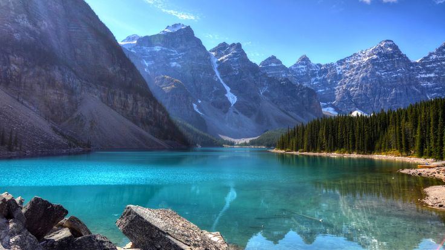

Amazing Article
Negura RodicaWhether it's watching blue, rolling waves crash against the sandy shore or hearing birds chirping in a green, luscious forest, there is something so remarkable and beautiful about being immersed in nature. It’s easy to be swept away with today’s technology and fast-paced living,but no matter where you are, nature always has a way of bringing peace to the mind and grounding a person. Although most of us spend our days online, it’s always important to unplug and step outside for a little sunshine and fresh air. Maybe it’s going for a walk in the park or planning a hike on a sunny weekend. Whatever you decide, we're sure it will be full of awe! And to celebrate Earth’s gifts, we are sharing some amazing nature quotes to emphasize some of the beauty and wonders of Mother Nature.
Nature
The soft morning light calling us to the day, the comforting smell of rain, the glory of a sunset—nature has a way of calling us back, however far we may stray. This collection of nature quotes reminds us to revel in it, to be restored by it, to protect it, and ultimately, that it is us who must obey it rather than the other way around (you were a wise one, Francis Bacon). You might commune with nature through gardening (the health benefits are many!) or by embarking on a hike. Perhaps you grab a moment when you can to feel the sun on your face and catch a few refrains of birdsong—in fact, that’s a good idea right now, as you meditate on these quotes about nature by poets, authors, artists, scientists, naturalists, and philosophers.